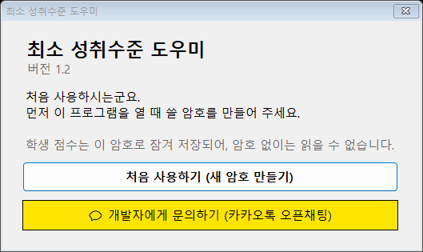
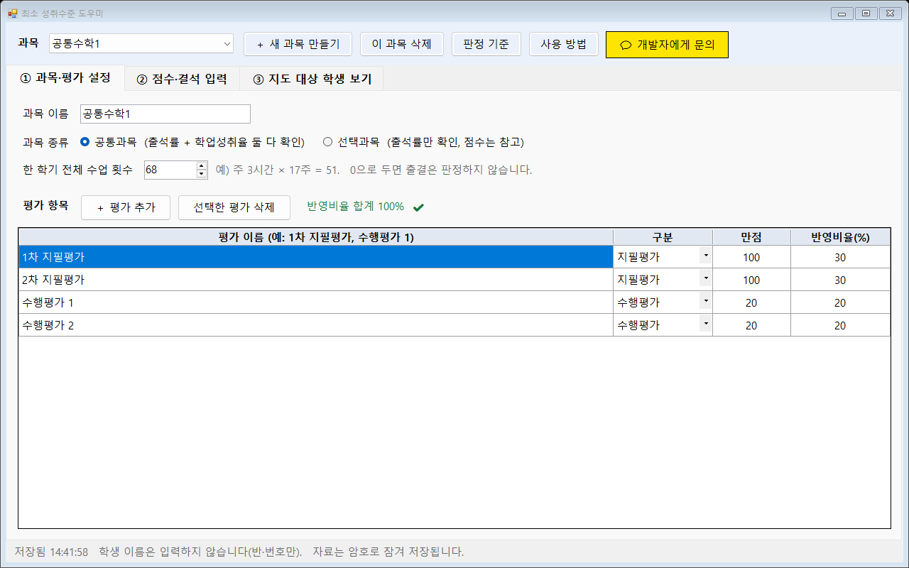
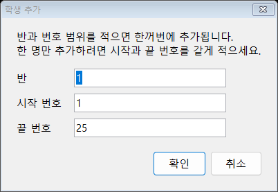
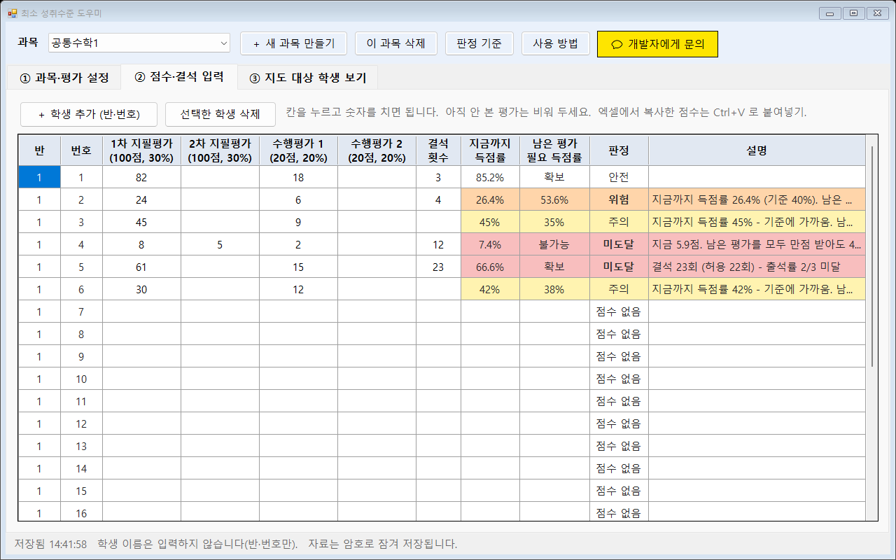
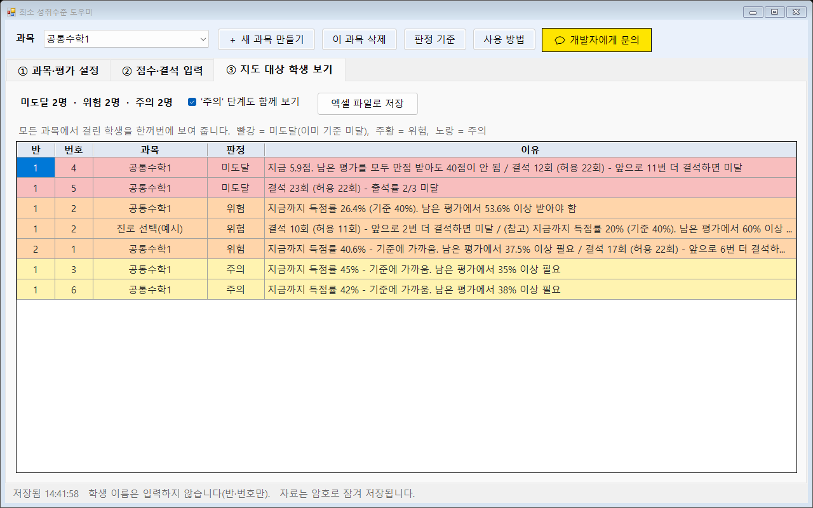
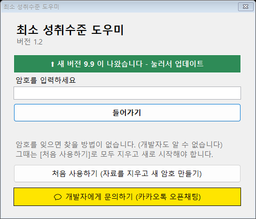

최소 성취수준 도우미
사용 설명서 · 버전 1.2 기준
고교학점제의 과목 이수 기준에 못 미칠 수 있는 학생을, 학기가 끝나기 전에 미리 찾아보는 프로그램입니다.
지금까지 본 평가 점수와 결석 횟수를 넣으면 학생마다 안전 · 주의 · 위험 · 미도달로 알려 줍니다.
| 과목 종류 | 이수 기준 (2026학년도부터) |
|---|
| 공통과목 | 출석률 2/3 이상 그리고 학업성취율 40% 이상 |
| 선택과목 | 출석률 2/3 이상 |
이 프로그램의 판정은 지도 대상을 미리 살펴보기 위한 참고 자료입니다. 실제 이수 여부는 학교의 학업성적관리규정과 교육청 지침에 따라 정해집니다.
- 처음 시작하기
- ① 과목·평가 설정
- ② 점수·결석 입력
- ③ 지도 대상 학생 보기
- 판정은 이렇게 정해집니다
- 암호와 자료 보관
- 업데이트
- 자주 묻는 질문 · 문의
1. 처음 시작하기
- 최소성취수준 도우미.exe 파일을 원하는 폴더(예: 바탕화면에 새 폴더)에 두고 두 번 눌러 엽니다. 설치는 필요 없습니다.
- 처음이면 아래 창이 나옵니다. 처음 사용하기 (새 암호 만들기)를 누릅니다.
- 앞으로 쓸 암호를 8자 이상으로 두 번 적고 확인을 누릅니다.

처음 실행했을 때
암호는 꼭 기억해 두세요. 암호를 잊으면 찾을 방법이 없습니다. 개발자도 알 수 없고, 저장해 둔 점수는 다시 볼 수 없게 됩니다.
다음부터는 프로그램을 열 때마다 암호를 적고 들어가기를 누르면 됩니다. 암호를 확인하는 데 1~3초쯤 걸립니다.
파일을 열 때 Windows가 "PC 보호" 같은 파란 경고 창을 띄우는 경우에는 추가 정보 → 실행을 누르면 됩니다.
2. ① 과목·평가 설정
맨 위의 ＋ 새 과목 만들기를 누르고 과목 이름을 적습니다. 여러 반을 가르치면 한 과목에 여러 반 학생을 함께 넣어도 되고, "공통수학1 3반"처럼 반마다 따로 만들어도 됩니다.

① 과목·평가 설정 화면
| 칸 | 적는 내용 |
|---|
| 과목 종류 | 공통과목은 점수와 출석을 모두 봅니다. 선택과목은 출석만 판정하고 점수는 참고로만 보여 줍니다. |
| 한 학기 전체 수업 횟수 | 그 과목의 한 학기 수업 시수입니다. 예) 주 3시간 × 17주 = 51. 0으로 두면 출결은 판정하지 않습니다. |
| 평가 항목 | 평가 이름, 구분(지필평가/수행평가), 만점, 반영비율(%)을 적습니다. 새 과목에는 지필 2회(각 30%)와 수행 2회(각 20%)가 미리 들어 있으니 학교 계획에 맞게 고치면 됩니다. |
- 평가를 늘리려면 ＋ 평가 추가, 지우려면 그 줄을 누른 뒤 선택한 평가 삭제를 누릅니다. 평가를 지우면 거기에 적은 점수도 함께 지워집니다.
- 반영비율 합계가 100%가 아니어도 됩니다. 모자란 만큼은 "아직 안 본 평가"로 계산합니다. 100%를 넘으면 빨간 글씨로 알려 줍니다.
3. ② 점수·결석 입력
- ＋ 학생 추가 (반·번호)를 누르고 반, 시작 번호, 끝 번호를 적습니다. 예) 1반 1번~25번을 한 번에 추가. 한 명만 넣으려면 시작과 끝 번호를 같게 적습니다.
- 칸을 누르고 숫자를 칩니다. Enter를 누르면 아래 칸으로 내려갑니다.
- 아직 안 본 평가는 비워 둡니다. 0점을 받은 학생만 0이라고 적습니다. (비워 둔 칸과 0점은 다르게 계산됩니다.)
- 결석 횟수 칸에는 그 과목 수업에 빠진 횟수를 적습니다.

학생 추가 창 — 이름은 적지 않습니다

② 점수·결석 입력 화면 (예시 자료)
엑셀에 있는 점수 붙여넣기
- 엑셀에서 점수 부분만 끌어서 선택하고 Ctrl+C로 복사합니다. (학생 순서가 반·번호 순서와 같아야 합니다.)
- 이 프로그램에서 붙여넣기를 시작할 맨 위 왼쪽 칸을 한 번 누릅니다.
- Ctrl+V를 누릅니다. 숫자가 아니거나 만점을 넘는 칸은 건너뛰고, 몇 칸을 건너뛰었는지 알려 줍니다.
- 칸을 지우려면 칸을 선택하고 Delete 키를 누릅니다.
- 학생을 빼려면 그 학생 줄의 아무 칸이나 누른 뒤 선택한 학생 삭제를 누릅니다.
- 오른쪽의 "지금까지 득점률 · 남은 평가 필요 득점률 · 판정 · 설명"은 입력하는 즉시 바뀝니다. 설명이 잘려 보이면 마우스를 올려 두거나 ③ 화면에서 보면 됩니다.
- 따로 저장할 필요가 없습니다. 입력하면 바로 저장됩니다.
4. ③ 지도 대상 학생 보기
모든 과목에서 걸린 학생을 심각한 순서대로 한꺼번에 보여 줍니다. 같은 학생이 여러 과목에서 걸리면 과목마다 한 줄씩 나옵니다.

③ 지도 대상 학생 보기 화면 (예시 자료)
- 맨 위 숫자는 단계별 학생 수입니다. 한 학생이 여러 과목에서 걸려도 가장 심각한 단계로 한 번만 셉니다.
- '주의' 단계도 함께 보기의 체크를 풀면 위험·미도달만 남습니다.
- 엑셀 파일로 저장을 누르면 지금 보이는 목록이 엑셀에서 열리는 파일(CSV)로 저장됩니다.
엑셀로 저장한 파일은 암호로 잠기지 않습니다. 메신저로 보내거나 공용 폴더에 둘 때 주의해 주세요.
5. 판정은 이렇게 정해집니다
| 단계 | 점수 (공통과목) | 출결 |
|---|
| 미도달 | 남은 평가를 모두 만점 받아도 40점이 안 됨. 또는 모든 평가가 끝났는데 40점 미만 | 결석이 허용 횟수를 넘음 |
| 위험 | 지금까지 득점률이 40% 미만 | 결석이 허용 횟수의 70% 이상 |
| 주의 | 지금까지 득점률이 40% 이상 50% 미만 | 결석이 허용 횟수의 절반 이상 |
| 안전 | 그 밖의 경우. 이미 40점을 확보했으면 "확보"로 표시 | 그 밖의 경우 |
- 점수와 출결 가운데 더 심각한 쪽이 그 학생의 판정이 됩니다.
- 허용 결석 횟수 = 한 학기 전체 수업 횟수 ÷ 3 (소수점 버림). 예) 51회 수업이면 17회까지, 18회부터 미달입니다.
- "주의·위험"을 가르는 50%와 70%는 미리 살펴보기 위해 프로그램이 정한 눈금이며, 지침에 있는 숫자가 아닙니다.
계산 예
1차 지필평가(100점 만점, 30%)에서 24점, 수행평가 1(20점 만점, 20%)에서 6점을 받았고 나머지 두 평가는 아직 안 본 학생:
- 지금까지 얻은 점수 = 24÷100×30 + 6÷20×20 = 7.2 + 6 = 13.2점 (반영비율 50% 가운데)
- 지금까지 득점률 = 13.2 ÷ 50 = 26.4% → 40% 미만이므로 위험
- 남은 평가(50%)에서 필요한 점수 = 40 − 13.2 = 26.8점 → 26.8 ÷ 50 = 53.6% 이상 받아야 함
기준 40%와 주의 눈금(40%에서 +10%p)은 지침이 바뀌었을 때 위쪽의 판정 기준 버튼에서 고칠 수 있습니다.
6. 암호와 자료 보관
- 학생 이름은 어디에도 입력하지 않습니다. 반과 번호만 씁니다.
- 입력한 자료는 exe 파일과 같은 폴더의 최소성취_자료.dat 한 파일에 저장됩니다. (그 폴더에 저장할 수 없을 때만 「문서\최소성취수준 도우미」 폴더에 저장됩니다. 정확한 위치는 사용 방법 창 맨 아래에 나옵니다.)
- 이 파일은 암호로 잠겨 있어, 파일을 열어 봐도 과목 이름이나 점수를 읽을 수 없습니다.
- 인터넷으로 보내는 자료는 없습니다. 인터넷은 새 버전이 있는지 확인할 때만 씁니다.
다른 컴퓨터로 옮기거나 백업하려면
exe 파일과 최소성취_자료.dat 파일을 함께 복사하면 됩니다. 옮긴 곳에서도 같은 암호로 열립니다. 학기 중에는 가끔 이 두 파일을 USB 등에 복사해 두기를 권합니다.
암호를 잊었을 때
되찾는 방법은 없습니다. 시작 화면의 처음 사용하기 (자료를 지우고 새 암호 만들기)로 새로 시작해야 합니다.
[처음 사용하기]를 하면 그 컴퓨터에 저장되어 있던 모든 과목·점수·결석 자료가 지워지고 되살릴 수 없습니다. 누르면 먼저 경고 창이 나오며, 거기서 "아니요"를 누르거나 암호 만들기 창에서 "취소"를 누르면 지워지지 않습니다.
7. 업데이트
새 버전이 나오면 시작 화면 맨 위에 초록색 버튼이 나타납니다. 누르면 새 버전을 내려받아 바꾼 뒤 프로그램이 다시 열립니다. 저장한 자료와 암호는 그대로입니다.

새 버전이 있을 때의 시작 화면 (버전 숫자는 예시)
- 버튼을 누르지 않으면 지금 버전을 그대로 쓸 수 있습니다.
- 인터넷이 안 되면 버튼이 나타나지 않을 뿐, 프로그램은 평소처럼 쓸 수 있습니다.
- 지금 쓰는 버전은 시작 화면의 제목 아래에 "버전 1.2"처럼 적혀 있습니다.
8. 자주 묻는 질문 · 문의
| 질문 | 답 |
|---|
| 점수를 넣었는데 판정이 "점수 없음"으로 나옵니다. | 그 평가의 반영비율이 0%로 되어 있지 않은지 ① 화면에서 확인해 주세요. |
| 결석을 넣었는데 출결 판정이 안 나옵니다. | ① 화면의 "한 학기 전체 수업 횟수"가 0이면 출결은 판정하지 않습니다. |
| 선택과목인데 점수가 낮은 학생이 "안전"으로 나옵니다. | 선택과목은 출석률만 이수 기준이라 그렇습니다. 점수가 많이 낮으면 설명 칸에 "(참고)"로 적어 줍니다. |
| 점수가 "0 ~ 만점 사이 숫자로 적어 주세요"라며 안 들어갑니다. | 그 평가의 만점보다 큰 숫자이거나 글자가 섞여 있습니다. 만점이 다르면 ① 화면에서 만점을 먼저 고쳐 주세요. |
| 학기가 바뀌면 어떻게 하나요? | 지난 과목을 이 과목 삭제로 지우고 새 과목을 만들면 됩니다. 지난 자료를 남기려면 지우기 전에 폴더째 복사해 두세요. |
| 여러 선생님이 한 파일을 같이 쓸 수 있나요? | 동시에 함께 쓰는 기능은 없습니다. 선생님마다 자기 컴퓨터에서 따로 쓰는 프로그램입니다. |
| "저장하지 못했습니다"가 아래쪽에 빨갛게 나옵니다. | 자료 파일에 쓸 수 없는 상태입니다(폴더가 읽기 전용이거나 USB를 뺀 경우 등). 그 뒤에 입력한 내용은 저장되지 않으니, 폴더를 확인한 뒤 프로그램을 다시 열어 주세요. |
개발자에게 문의하기
시작 화면이나 프로그램 위쪽의 노란색 개발자에게 문의 버튼을 누르면 카카오톡 오픈채팅(1:1)이 열립니다. 버튼이 안 열리면 아래 주소를 직접 적어 주세요.
https://open.kakao.com/o/svtrOmLi
문의할 때 학생 점수가 보이는 화면은 보내지 마세요. 어떤 버튼을 눌렀을 때 어떤 글이 나왔는지만 알려 주셔도 충분합니다.